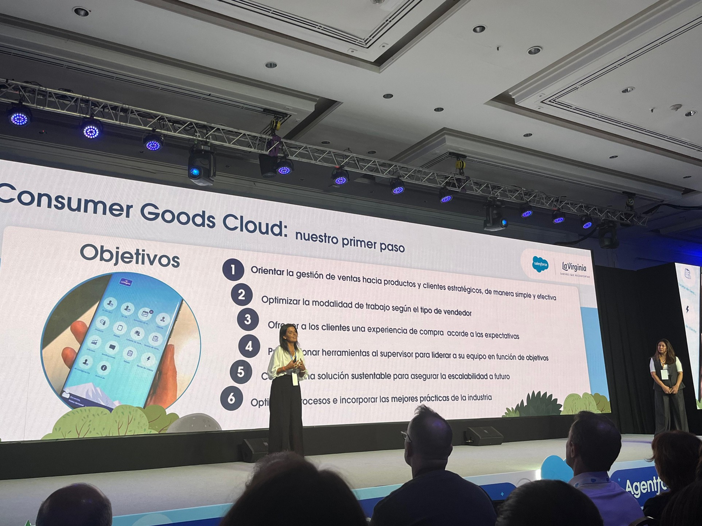

Surtido inteligente con agentes asistentes para la fuerza de ventas.

Desafío
El equipo comercial de La Virginia necesitaba evolucionar su concepto de surtido. Los vendedores en ruta carecían de información contextual sobre cada cuenta: performance histórica, inducciones, reemplazos. La administración de surtidos por sucursal, plaza o campaña era manual y lenta.
Solución
Implementamos cinco casos de uso con Agentforce + Consumer Goods Cloud: productos recomendados con surtido inteligente, asistente del vendedor con foco en góndola, assessment de cuenta con información contextual, asistente de administración de surtidos por centro/plaza/campaña y alta de prospectos dentro de la ruta.
Resultado
Cada vendedor ahora cuenta con un asistente IA en su ruta. La administración comercial gestiona surtidos de forma centralizada y dinámica. Las acciones en el punto de venta se priorizan en base a datos reales.
en producción
asistencia IA